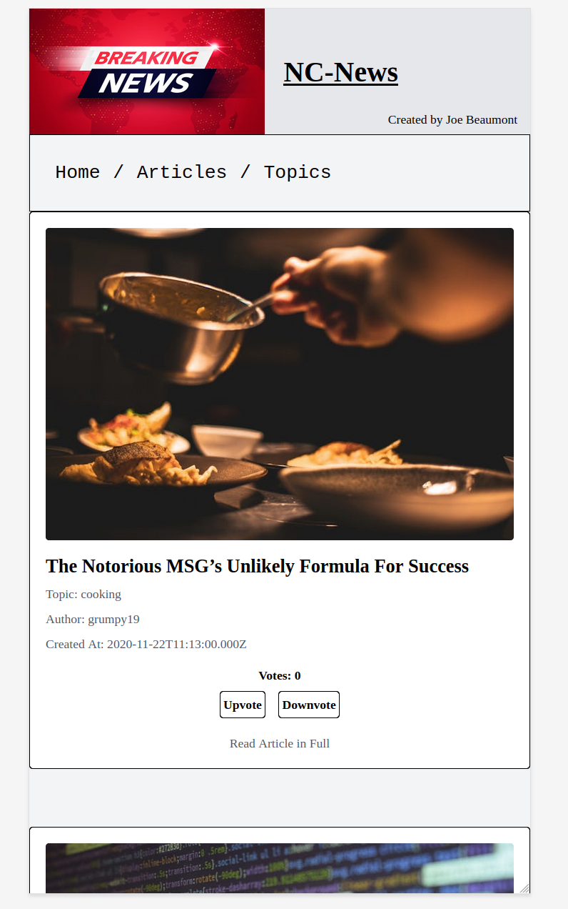
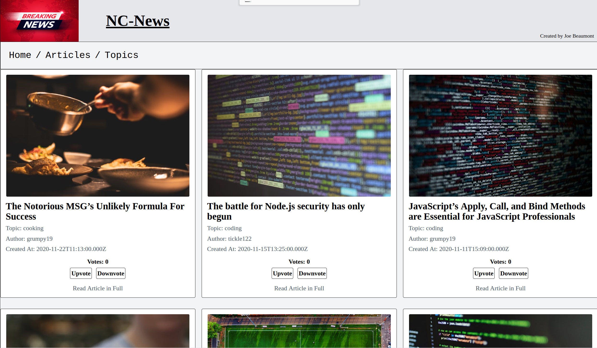
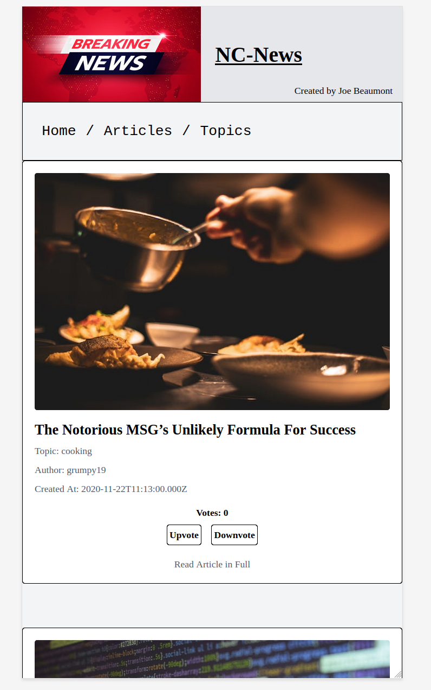
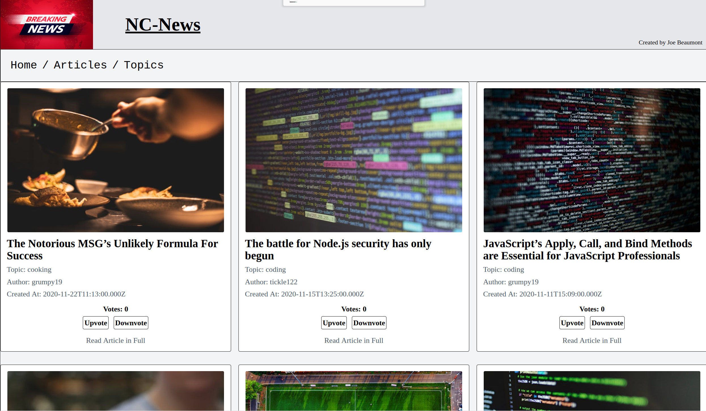

NC_News
A news app built using React.js, Tailwind CSS and used React Router for navigation to different areas of the site. API developed in Node.js
 



NC_News was created in two parts.
Back-End
I began by building the database in PostgreSQL and creating a seed script to populate the database whilst practicing TDD using Jest and SuperTest.
I knew the CRUD endpoints and queries I wanted the user to be able to access as part of an MVP so I built the API using express and started building model and controller functions to achieve this.
Probably the biggest challenge I had when creating the back-end was tackling the error-handling middleware, but eventually I was able to incorporate functions that handled any reasonable errors a user might encounter.
Finally I refactored my code to use express.Router as it resulted in much drier code.
Front-End
The front-end was created using React.js with Axios iteracting with the API.
After I'd gathered some more experience working on my other projects I revisited NC_News and adopted tailwind.css with my main focus being creating a responsive design.